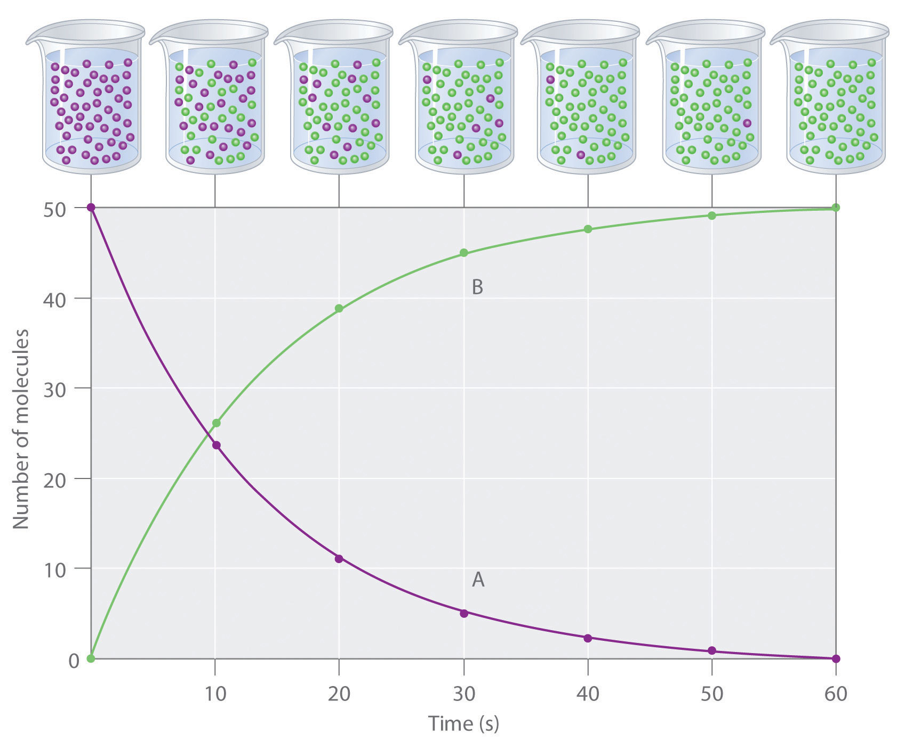
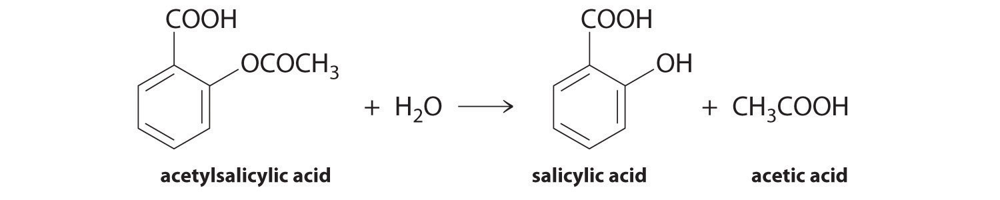
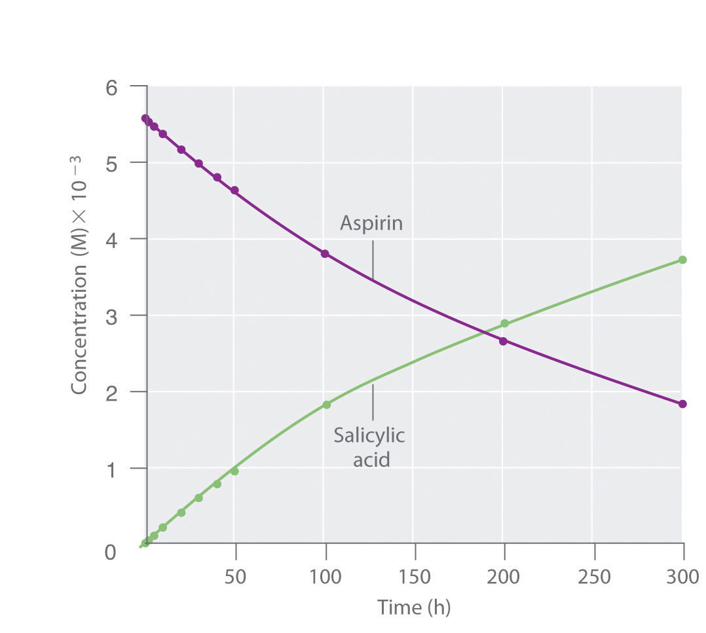

The factors discussed in Section 14.1 "Factors That Affect Reaction Rates" affect the reaction rate of a chemical reaction, which may determine whether a desired product is formed. In this section, we will show you how to quantitatively determine the reaction rate.
Reaction rates are usually expressed as the concentration of reactant consumed or the concentration of product formed per unit time. The units are thus moles per liter per unit time, written as M/s, M/min, or M/h. To measure reaction rates, chemists initiate the reaction, measure the concentration of the reactant or product at different times as the reaction progresses, perhaps plot the concentration as a function of time on a graph, and then calculate the change in the concentration per unit time.
The progress of a simple reaction (A → B) is shown in Figure 14.5 "The Progress of a Simple Reaction (A → B)", where the beakers are snapshots of the composition of the solution at 10 s intervals. The number of molecules of reactant (A) and product (B) are plotted as a function of time in the graph. Each point in the graph corresponds to one beaker in Figure 14.5 "The Progress of a Simple Reaction (A → B)". The reaction rate is the change in the concentration of either the reactant or the product over a period of time. The concentration of A decreases with time, while the concentration of B increases with time.
Figure 14.5 The Progress of a Simple Reaction (A → B)
The mixture initially contains only A molecules (purple). With increasing time, the number of A molecules decreases and more B molecules (green) are formed (top). The graph shows the change in the number of A and B molecules in the reaction as a function of time over a 1 min period (bottom).
Equation 14.4
Just as in Chapter 4 "Reactions in Aqueous Solution" and Chapter 5 "Energy Changes in Chemical Reactions", square brackets indicate molar concentrations, and the capital Greek delta (Δ) means “change in.” Because chemists follow the convention of expressing all reaction rates as positive numbers, however, a negative sign is inserted in front of Δ[A]/Δt to convert that expression to a positive number. The reaction rate we would calculate for the reaction A → B using Equation 14.4 would be different for each interval. (This is not true for every reaction, as you will see later.) A much greater change occurs in [A] and [B] during the first 10 s interval, for example, than during the last, which means that the reaction rate is fastest at first. This is consistent with the concentration effects described in Section 14.1 "Factors That Affect Reaction Rates" because the concentration of A is greatest at the beginning of the reaction.
Reaction rates generally decrease with time as reactant concentrations decrease.
We can use Equation 14.4 to determine the reaction rate of hydrolysis of aspirin, probably the most commonly used drug in the world. (More than 25,000,000 kg are produced annually worldwide.) Aspirin (acetylsalicylic acid) reacts with water (such as water in body fluids) to give salicylic acid and acetic acid.
Figure 14.6
Because salicylic acid is the actual substance that relieves pain and reduces fever and inflammation, a great deal of research has focused on understanding this reaction and the factors that affect its rate. Data for the hydrolysis of a sample of aspirin are in Table 14.1 "Data for Aspirin Hydrolysis in Aqueous Solution at pH 7.0 and 37°C*" and are shown in the graph in Figure 14.7 "The Hydrolysis of Aspirin". These data were obtained by removing samples of the reaction mixture at the indicated times and analyzing them for the concentrations of the reactant (aspirin) and one of the products (salicylic acid).
Table 14.1 Data for Aspirin Hydrolysis in Aqueous Solution at pH 7.0 and 37°C*
| Time (h) | [Aspirin] (M) | [Salicylic Acid] (M) |
|---|---|---|
| 0 | 5.55 × 10−3 | 0 |
| 2.0 | 5.51 × 10−3 | 0.040 × 10−3 |
| 5.0 | 5.45 × 10−3 | 0.10 × 10−3 |
| 10 | 5.35 × 10−3 | 0.20 × 10−3 |
| 20 | 5.15 × 10−3 | 0.40 × 10−3 |
| 30 | 4.96 × 10−3 | 0.59 × 10−3 |
| 40 | 4.78 × 10−3 | 0.77 × 10−3 |
| 50 | 4.61 × 10−3 | 0.94 × 10−3 |
| 100 | 3.83 × 10−3 | 1.72 × 10−3 |
| 200 | 2.64 × 10−3 | 2.91 × 10−3 |
| 300 | 1.82 × 10−3 | 3.73 × 10−3 |
| *The reaction at pH 7.0 is very slow. It is much faster under acidic conditions, such as those found in the stomach. | ||
Figure 14.7 The Hydrolysis of Aspirin
This graph shows the concentrations of aspirin and salicylic acid as a function of time, based on the hydrolysis data in Table 14.1 "Data for Aspirin Hydrolysis in Aqueous Solution at pH 7.0 and 37°C*". The time dependence of the concentration of the other product, acetate, is not shown, but based on the stoichiometry of the reaction, it is identical to the data for salicylic acid.
We can calculate the average reaction rateThe reaction rate calculated for a given time interval from the concentrations of either the reactant or one of the products at the beginning of the interval time and at the end of the interval for a given time interval from the concentrations of either the reactant or one of the products at the beginning of the interval (time = t0) and at the end of the interval (t1). Using salicylic acid, for example, we find the reaction rate for the interval between t = 0 h and t = 2.0 h (recall that change is always calculated as final minus initial):
We can also calculate the reaction rate from the concentrations of aspirin at the beginning and the end of the same interval, remembering to insert a negative sign, because its concentration decreases:
If we now calculate the reaction rate during the last interval given in Table 14.1 "Data for Aspirin Hydrolysis in Aqueous Solution at pH 7.0 and 37°C*" (the interval between 200 h and 300 h after the start of the reaction), we find that the reaction rate is significantly slower than it was during the first interval (t = 0–2.0 h):
(You should verify from the data in Table 14.1 "Data for Aspirin Hydrolysis in Aqueous Solution at pH 7.0 and 37°C*" that you get the same rate using the concentrations of aspirin measured at 200 h and 300 h.)
In the preceding example, the stoichiometric coefficients in the balanced chemical equation are the same for all reactants and products; that is, the reactants and products all have the coefficient 1. Let us look at a reaction in which the coefficients are not all the same: the fermentation of sucrose to ethanol and carbon dioxide, which we encountered in Chapter 3 "Chemical Reactions".
Equation 14.5
The coefficients show us that the reaction produces four molecules of ethanol and four molecules of carbon dioxide for every one molecule of sucrose consumed. As before, we can find the reaction rate by looking at the change in the concentration of any reactant or product. In this particular case, however, a chemist would probably use the concentration of either sucrose or ethanol because gases are usually measured as volumes and, as you learned in Chapter 10 "Gases", the volume of CO2 gas formed will depend on the total volume of the solution being studied and the solubility of the gas in the solution, not just the concentration of sucrose. The coefficients in the balanced chemical equation tell us that the reaction rate at which ethanol is formed is always four times faster than the reaction rate at which sucrose is consumed:
Equation 14.6
The concentration of the reactant—in this case sucrose—decreases with increasing time, so the value of Δ[sucrose] is negative. Consequently, a minus sign is inserted in front of Δ[sucrose] in Equation 14.6 so that the rate of change of the sucrose concentration is expressed as a positive value. Conversely, the ethanol concentration increases with increasing time, so its rate of change is automatically expressed as a positive value.
Often the reaction rate is expressed in terms of the reactant or product that has the smallest coefficient in the balanced chemical equation. The smallest coefficient in the sucrose fermentation reaction (Equation 14.5) corresponds to sucrose, so the reaction rate is generally defined as follows:
Equation 14.7
Consider the thermal decomposition of gaseous N2O5 to NO2 and O2 via the following equation:
Write expressions for the reaction rate in terms of the rates of change in the concentrations of the reactant and each product with time.
Given: balanced chemical equation
Asked for: reaction rate expressions
Strategy:
A Choose the species in the equation that has the smallest coefficient. Then write an expression for the rate of change of that species with time.
B For the remaining species in the equation, use molar ratios to obtain equivalent expressions for the reaction rate.
Solution:
A Because O2 has the smallest coefficient in the balanced chemical equation for the reaction, we define the reaction rate as the rate of change in the concentration of O2 and write that expression.
B We know from the balanced chemical equation that 2 mol of N2O5 must decompose for each 1 mol of O2 produced and that 4 mol of NO2 are produced for every 1 mol of O2 produced. The molar ratios of O2 to N2O5 and to NO2 are thus 1:2 and 1:4, respectively. This means that we divide the rate of change of [N2O5] and [NO2] by its stoichiometric coefficient to obtain equivalent expressions for the reaction rate. For example, because NO2 is produced at four times the rate of O2, we must divide the rate of production of NO2 by 4. The reaction rate expressions are as follows:
Exercise
The key step in the industrial production of sulfuric acid is the reaction of SO2 with O2 to produce SO3.
2SO2(g) + O2(g) → 2SO3(g)Write expressions for the reaction rate in terms of the rate of change of the concentration of each species.
Answer:
Using the reaction shown in Example 1, calculate the reaction rate from the following data taken at 56°C:
| 2N2O5(g) → 4NO2(g) + O2(g) | |||
|---|---|---|---|
| Time (s) | [N2O5] (M) | [NO2] (M) | [O2] (M) |
| 240 | 0.0388 | 0.0314 | 0.00792 |
| 600 | 0.0197 | 0.0699 | 0.0175 |
Given: balanced chemical equation and concentrations at specific times
Asked for: reaction rate
Strategy:
A Using the equations in Example 1, subtract the initial concentration of a species from its final concentration and substitute that value into the equation for that species.
B Substitute the value for the time interval into the equation. Make sure your units are consistent.
Solution:
A We are asked to calculate the reaction rate in the interval between t1 = 240 s and t2 = 600 s. From Example 1, we see that we can evaluate the reaction rate using any of three expressions:
Subtracting the initial concentration from the final concentration of N2O5 and inserting the corresponding time interval into the rate expression for N2O5,
B Substituting actual values into the expression,
Similarly, we can use NO2 to calculate the reaction rate:
If we allow for experimental error, this is the same rate we obtained using the data for N2O5, as it should be because the reaction rate should be the same no matter which concentration is used. We can also use the data for O2:
Again, this is the same value we obtained from the N2O5 and NO2 data. Thus the reaction rate does not depend on which reactant or product is used to measure it.
Exercise
Using the data in the following table, calculate the reaction rate of SO2(g) with O2(g) to give SO3(g).
| 2SO2(g) + O2(g) → 2SO3(g) | |||
|---|---|---|---|
| Time (s) | [SO2] (M) | [O2] (M) | [SO3] (M) |
| 300 | 0.0270 | 0.0500 | 0.0072 |
| 720 | 0.0194 | 0.0462 | 0.0148 |
Answer: 9.0 × 10−6 M/s
So far, we have determined average reaction rates over particular intervals of time. We can also determine the instantaneous rateThe reaction rate of a chemical reaction at any given point in time. of a reaction, which is the reaction rate at any given point in time. As the period of time used to calculate an average rate of a reaction becomes shorter and shorter, the average rate approaches the instantaneous rate.If you have studied calculus, you may recognize that the instantaneous rate of a reaction at a given time corresponds to the slope of a line tangent to the concentration-versus-time curve at that point—that is, the derivative of concentration with respect to time.
Think of the distinction between the instantaneous and average rates of a reaction as being similar to the distinction between the actual speed of a car at any given time on a trip and the average speed of the car for the entire trip. Although you may travel for a long time at 65 mph on an interstate highway during a long trip, there may be times when you travel only 25 mph in construction zones or 0 mph if you stop for meals or gas. Thus your average speed on the trip may be only 50 mph, whereas your instantaneous speed on the interstate at a given moment may be 65 mph. Whether you are able to stop the car in time to avoid an accident depends on your instantaneous speed, not your average speed. There are important differences between the speed of a car during a trip and the speed of a chemical reaction, however. The speed of a car may vary unpredictably over the length of a trip, and the initial part of a trip is often one of the slowest. In a chemical reaction, the initial interval normally has the fastest rate (though this is not always the case), and the reaction rate generally changes smoothly over time.
In chemical kinetics, we generally focus on one particular instantaneous rate, which is the initial reaction rate, t = 0. Initial rates are determined by measuring the reaction rate at various times and then extrapolating a plot of rate versus time to t = 0.
In Section 14.1 "Factors That Affect Reaction Rates", you learned that reaction rates generally decrease with time because reactant concentrations decrease as reactants are converted to products. You also learned that reaction rates generally increase when reactant concentrations are increased. We now examine the mathematical expressions called rate lawsMathematical expressions that describe the relationships between reactant rates and reactant concentrations in a chemical reaction., which describe the relationships between reactant rates and reactant concentrations. Rate laws are laws as defined in Chapter 1 "Introduction to Chemistry"; that is, they are mathematical descriptions of experimentally verifiable data.
Rate laws may be written from either of two different but related perspectives. A differential rate lawA rate law that expresses the reaction rate in terms of changes in the concentration of one or more reactants (Δ[R]) over a specific time interval expresses the reaction rate in terms of changes in the concentration of one or more reactants (Δ[R]) over a specific time interval (Δt). In contrast, an integrated rate lawA rate law that expresses the reaction rate in terms of the initial concentration and the measured concentration of one or more reactants ([R]) after a given amount of time describes the reaction rate in terms of the initial concentration ([R]0) and the measured concentration of one or more reactants ([R]) after a given amount of time (t); we will discuss integrated rate laws in Section 14.3 "Methods of Determining Reaction Order". The integrated rate law can be found by using calculus to integrate the differential rate law, although the method of doing so is beyond the scope of this text. Whether you use a differential rate law or integrated rate law, always make sure that the rate law gives the proper units for the reaction rate, usually moles per liter per second (M/s).
For a reaction with the general equation
Equation 14.8
aA + bB → cC + dDthe experimentally determined rate law usually has the following form:
Equation 14.9
rate = k[A]m[B]nThe proportionality constant (k) is called the rate constantA proportionality constant whose value is characteristic of the reaction and the reaction conditions and whose numerical value does not change as the reaction progresses under a given set of conditions., and its value is characteristic of the reaction and the reaction conditions. A given reaction has a particular value of the rate constant under a given set of conditions, such as temperature, pressure, and solvent; varying the temperature or the solvent usually changes the value of the rate constant. The numerical value of k, however, does not change as the reaction progresses under a given set of conditions.
Thus the reaction rate depends on the rate constant for the given set of reaction conditions and the concentration of A and B raised to the powers m and n, respectively. The values of m and n are derived from experimental measurements of the changes in reactant concentrations over time and indicate the reaction orderNumbers that indicate the degree to which the reaction rate depends on the concentration of each reactant., the degree to which the reaction rate depends on the concentration of each reactant; m and n need not be integers. For example, Equation 14.9 tells us that Equation 14.8 is mth order in reactant A and nth order in reactant B. It is important to remember that n and m are not related to the stoichiometric coefficients a and b in the balanced chemical equation and must be determined experimentally. The overall reaction order is the sum of all the exponents in the rate law: m + n.
Under a given set of conditions, the value of the rate constant does not change as the reaction progresses.
Although differential rate laws are generally used to describe what is occurring on a molecular level during a reaction, integrated rate laws are used to determine the reaction order and the value of the rate constant from experimental measurements. (We present general forms for integrated rate laws in Section 14.3 "Methods of Determining Reaction Order".) To illustrate how chemists interpret a differential rate law, we turn to the experimentally derived rate law for the hydrolysis of t-butyl bromide in 70% aqueous acetone. This reaction produces t-butanol according to the following equation:
Equation 14.10
(CH3)3CBr(soln) + H2O(soln) → (CH3)3COH(soln) + HBr(soln)Combining the rate expression in Equation 14.4 and Equation 14.9 gives us a general expression for the differential rate law:
Equation 14.11
Inserting the identities of the reactants into Equation 14.11 gives the following expression for the differential rate law for the reaction:
Equation 14.12
Experiments done to determine the rate law for the hydrolysis of t-butyl bromide show that the reaction rate is directly proportional to the concentration of (CH3)3CBr but is independent of the concentration of water. Thus m and n in Equation 14.12 are 1 and 0, respectively, and
Equation 14.13
rate = k[(CH3)3CBr]1[H2O]0 = k[(CH3)3CBr]Because the exponent for the reactant is 1, the reaction is first order in (CH3)3CBr. It is zeroth order in water because the exponent for [H2O] is 0. (Recall that anything raised to the zeroth power equals 1.) Thus the overall reaction order is 1 + 0 = 1. What the reaction orders tell us in practical terms is that doubling the concentration of (CH3)3CBr doubles the reaction rate of the hydrolysis reaction, halving the concentration of (CH3)3CBr halves the reaction rate, and so on. Conversely, increasing or decreasing the concentration of water has no effect on the reaction rate. (Again, when you work with rate laws, there is no simple correlation between the stoichiometry of the reaction and the rate law. The values of k, m, and n in the rate law must be determined experimentally.) Experimental data show that k has the value 5.15 × 10−4 s−1 at 25°C. The rate constant has units of reciprocal seconds (s−1) because the reaction rate is defined in units of concentration per unit time (M/s). The units of a rate constant depend on the rate law for a particular reaction.
Under conditions identical to those for the t-butyl bromide reaction, the experimentally derived differential rate law for the hydrolysis of methyl bromide (CH3Br) is as follows:
Equation 14.14
This reaction also has an overall reaction order of 1, but the rate constant in Equation 14.14 is approximately 106 times smaller than that for t-butyl bromide. Thus methyl bromide hydrolyzes about 1 million times more slowly than t-butyl bromide, and this information tells chemists how the reactions differ on a molecular level.
Frequently, changes in reaction conditions also produce changes in a rate law. In fact, chemists often change reaction conditions to obtain clues about what is occurring during a reaction. For example, when t-butyl bromide is hydrolyzed in an aqueous acetone solution containing OH− ions rather than in aqueous acetone alone, the differential rate law for the hydrolysis reaction does not change. For methyl bromide, in contrast, the differential rate law becomes rate = k″[CH3Br][OH−], with an overall reaction order of 2. Although the two reactions proceed similarly in neutral solution, they proceed very differently in the presence of a base, which again provides clues as to how the reactions differ on a molecular level.
Differential rate laws are generally used to describe what is occurring on a molecular level during a reaction, whereas integrated rate laws are used for determining the reaction order and the value of the rate constant from experimental measurements.
We present three reactions and their experimentally determined differential rate laws. For each reaction, give the units of the rate constant, give the reaction order with respect to each reactant, give the overall reaction order, and predict what happens to the reaction rate when the concentration of the first species in each chemical equation is doubled.
Given: balanced chemical equations and differential rate laws
Asked for: units of rate constant, reaction orders, and effect of doubling reactant concentration
Strategy:
A Express the reaction rate as moles per liter per second [mol/(L·s), or M/s]. Then determine the units of each chemical species in the rate law. Divide the units for the reaction rate by the units for all species in the rate law to obtain the units for the rate constant.
B Identify the exponent of each species in the rate law to determine the reaction order with respect to that species. Sum all exponents to obtain the overall reaction order.
C Use the mathematical relationships as expressed in the rate law to determine the effect of doubling the concentration of a single species on the reaction rate.
Solution:
A [HI]2 will give units of (moles per liter)2. For the reaction rate to have units of moles per liter per second, the rate constant must have reciprocal units [1/(M·s)]:
B The exponent in the rate law is 2, so the reaction is second order in HI. Because HI is the only reactant and the only species that appears in the rate law, the reaction is also second order overall.
C If the concentration of HI is doubled, the reaction rate will increase from k[HI]02 to k(2[HI])02 = 4k[HI]02. The reaction rate will therefore quadruple.
A Because no concentration term appears in the rate law, the rate constant must have M/s units for the reaction rate to have M/s units.
B The rate law tells us that the reaction rate is constant and independent of the N2O concentration. That is, the reaction is zeroth order in N2O and zeroth order overall.
C Because the reaction rate is independent of the N2O concentration, doubling the concentration will have no effect on the reaction rate.
A The rate law contains only one concentration term raised to the first power. Hence the rate constant must have units of reciprocal seconds (s−1) to have units of moles per liter per second for the reaction rate: M·s−1 = M/s.
B The only concentration in the rate law is that of cyclopropane, and its exponent is 1. This means that the reaction is first order in cyclopropane. Cyclopropane is the only species that appears in the rate law, so the reaction is also first order overall.
C Doubling the initial cyclopropane concentration will increase the reaction rate from k[cyclopropane]0 to 2k[cyclopropane]0. This doubles the reaction rate.
Exercise
Given the following two reactions and their experimentally determined differential rate laws: determine the units of the rate constant if time is in seconds, determine the reaction order with respect to each reactant, give the overall reaction order, and predict what will happen to the reaction rate when the concentration of the first species in each equation is doubled.
Answer:
Reaction rates are reported either as the average rate over a period of time or as the instantaneous rate at a single time.
The rate law for a reaction is a mathematical relationship between the reaction rate and the concentrations of species in solution. Rate laws can be expressed either as a differential rate law, describing the change in reactant or product concentrations as a function of time, or as an integrated rate law, describing the actual concentrations of reactants or products as a function of time.
The rate constant (k) of a rate law is a constant of proportionality between the reaction rate and the reactant concentration. The power to which a concentration is raised in a rate law indicates the reaction order, the degree to which the reaction rate depends on the concentration of a particular reactant.
general definition of rate for A → B
general form of rate law when A and B are reactants
Explain why the reaction rate is generally fastest at early time intervals. For the second-order A + B → C, what would the plot of the concentration of C versus time look like during the course of the reaction?
Explain the differences between a differential rate law and an integrated rate law. What two components do they have in common? Which form is preferred for obtaining a reaction order and a rate constant? Why?
Diffusion-controlled reactions have rates that are determined only by the reaction rate at which two reactant molecules can diffuse together. These reactions are rapid, with second-order rate constants typically on the order of 1010 L/(mol·s). Would you expect the reactions to be faster or slower in solvents that have a low viscosity? Why? Consider the reactions H3O+ + OH− → 2H2O and H3O+ + N(CH3)3 → H2O + HN(CH3)3+ in aqueous solution. Which would have the higher rate constant? Why?
What information can you get from the reaction order? What correlation does the reaction order have with the stoichiometry of the overall equation?
During the hydrolysis reaction A + H2O → B + C, the concentration of A decreases much more rapidly in a polar solvent than in a nonpolar solvent. How do you expect this effect to be reflected in the overall reaction order?
Reactant concentrations are highest at the beginning of a reaction. The plot of [C] versus t is a curve with a slope that becomes steadily less positive.
Faster in a less viscous solvent because the rate of diffusion is higher; the H3O+/OH− reaction is faster due to the decreased relative size of reactants and the higher electrostatic attraction between the reactants.
The reaction rate of a particular reaction in which A and B react to make C is as follows:
Write a reaction equation that is consistent with this rate law. What is the rate expression with respect to time if 2A are converted to 3C?
While commuting to work, a person drove for 12 min at 35 mph, then stopped at an intersection for 2 min, continued the commute at 50 mph for 28 min, drove slowly through traffic at 38 mph for 18 min, and then spent 1 min pulling into a parking space at 3 mph. What was the average rate of the commute? What was the instantaneous rate at 13 min? at 28 min?
Why do most studies of chemical reactions use the initial rates of reaction to generate a rate law? How is this initial rate determined? Given the following data, what is the reaction order? Estimate.
| Time (s) | [A] (M) |
|---|---|
| 120 | 0.158 |
| 240 | 0.089 |
| 360 | 0.062 |
Predict how the reaction rate will be affected by doubling the concentration of the first species in each equation.
Cleavage of C2H6 to produce two CH3· radicals is a gas-phase reaction that occurs at 700°C. This reaction is first order, with k = 5.46 × 10−4 s−1. How long will it take for the reaction to go to 15% completion? to 50% completion?
Three chemical processes occur at an altitude of approximately 100 km in Earth’s atmosphere.
Write a rate law for each elementary reaction. If the rate law for the overall reaction were found to be rate = k[N2+][O2], which one of the steps is rate limiting?
The oxidation of aqueous iodide by arsenic acid to give I3− and arsenous acid proceeds via the following reaction:
Write an expression for the initial rate of decrease of [I3−], Δ[I3−]/Δt. When the reaction rate of the forward reaction is equal to that of the reverse reaction: kf/kr = [H3AsO3][I3−]/[H3AsO4][I−]3[H+]2. Based on this information, what can you say about the nature of the rate-determining steps for the reverse and the forward reactions?
298 s; 1270 s